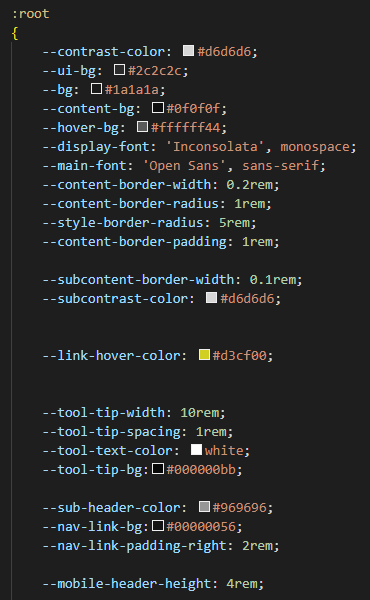
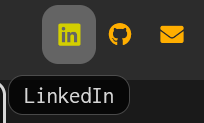
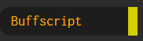
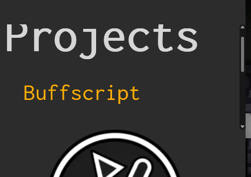
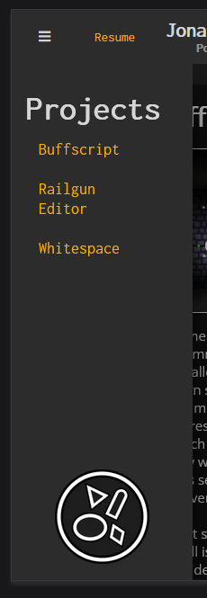
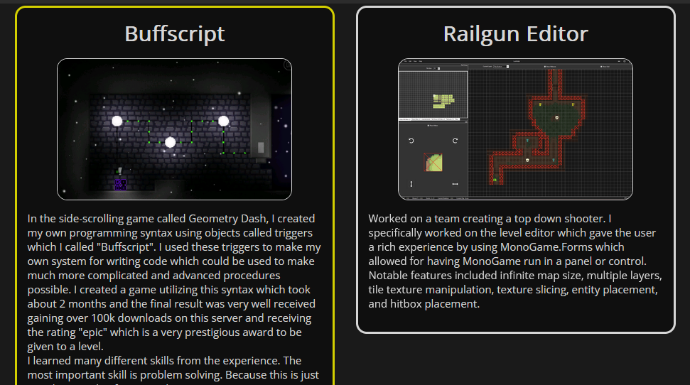
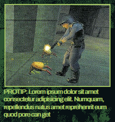

Documentation
Quicklinks
{kind=link}
Spec Goal
My goal currently was to recreate the source page as perfectly accurate as I could so that I could learn more about CSS. I find that when I delve deep into something, I tend to learn a lot more because I am invested in the final product that I am working towards. Unfortunatly I also had midterms and bug projects like this one for other classes as well and still do so I was not able to hand this in on time. Even still, I put in the effort I expect from myself because I think it is still a valuable experince even if I don't get full credit.
Final Goal
The audience that I was targetting for the final product was employers. My goal for the final product of this was to make a portfolio that was sleek and simple to look at while being easy to use and understand. I wanted to make things feel satisfying to interact with which is why I made most important things have some sort of animation but I also didn't want it to be annoying or obnoxious so the animations are short and snappy. I also had this idea of each project being in its own box since back when I did the 235 homepage as you might be able to tell from how that one looks.
Sources
Magazine PageThis is the source of the half-life magazine page I used. The images from the page are screenshots I took of this source and added the respective borders and such
Background ImageI edited this image to try and make it look similar to the background of the article
GonarchThis is where I got the gonarch from (alien at the bottom of the page)
Helpful Resources
Negating NumbersThis helped me understand how to use the calc function in CSS which would come in handy
Tool Tip TutorialThis is a w3schools tutorial on making a CSS only tooltip info popup thing. This was helpful when I made my own which differs from the tutorial but the tutorial gave me a basis for the idea and how I could go about it
Mobile NavbarThis is another w3schools tutorial about making a navbar menu. I based my hamburger menu off of this, though I deviated a lot from the original tutorial because of how I wanted it to act.
Resize EventI used this combined with the hamburger menu to make sure that the navbar is onscreen when the screen becomes wide enough to not need the menu popout anymore.
TimeoutThis helped for highlighting the content when navigating to it.
Fonts
Annotations and Screenshots

This is the initial annotation of what I planned to do. I followed the layouts somewhat but little did I realize that wrapping the text around all of the images would be much harder than just using floats.

The figures were relatively positioned on top of the document while empty elements served as the areas that the text would wrap around. This image shows the "hitbox" of the image which is just me putting a sem-transparent red background on the "hole" divs (where each space that words wrap around is called a "hole"). Essentially, because of how many different images I had to word wrap, I basically baked in the shape around into empty elements and then in a totally separate area of the document I had the actual figures (image + caption). The reason I had the figures in a different section was to make the html more semantic (which in some cases I had to compromise such as for some reason the article element was weird when trying to size it into a grid cell even if I had it display as a block element). Also in the background you can probably see the reference which I had in the background until the end so I could line things up and get the font sizes right

My plan for the portfolio is to have a header at the top that has links to github, linkedin, etc. as well as my name, maybe an icon, and other relavant small information about me. On the left side I want to make some type of navigation like filtering throuhg projects with tags or just scrolling to it. For the content, I want it to be modularized and standardized where each has some type of media like an image or youtube embed and then a brief description of the project. For the footer I would like to include a bigger summary like an about me section. While the header and navigation would stay on the screen at all times, the footer would not until you scroll all the way down or navigate there using the side bar. I think flex-box would be a good choice for the content boxes and media queries would be good for the header, footer, and possibly side bar (maybe it will get too cramped and need to become a hamburger menu).
Challenges and Extra Work
I used many variables and calculated stuff using them in order to make the styling more easily maintainable and customizable
A cool extra thing I did to make the site feel nicer was to add tool tips to logos and links that did not have titles or text. This was challenging but fun and satisfying when it was done.
Another thing that is less noticable is the little right border that appears when hovering and clicking nav bar links. These may seem simple but in order to make the border look like it is moving towards the text (inwards rather than outwards) I basically transitioned both the border and the padding.
Also, in case I have more content to navigate to or the screen is too small, the navigation becomes scrollable when there is not enough room without affecting the other elements around it.
Getting the hamburger menu to be interactive required a bit of javascript. I based it off of the tutorial mentioned earlier but greatly modified and learned some javascript stuff to get it to work the way I wanted. I would like to point out that for some reason the validator says the script tag is never closed but it definetly is so I don't know why it is saying it isn't.
Something I noticed when having feedback was that oftentimes people would be confused if the content was at the same point as another piece of content. Since the projects are using flexbox, wider screens will show multiple projects at once meaning navigating to one at the same x position will result in the screen not moving. Using my knowledge and learning setTimeout I made it so that when you navigate to content, it will make the border flash yellow to notify the user of which content it is navigating to.
Lastly, I just want to restate that getting those images in the spec to work both semantically and visually was very challenging. As shown earlier, it required the creation of basically hitboxes in order to wrap the single big text around all the different images strewn throughout the page.